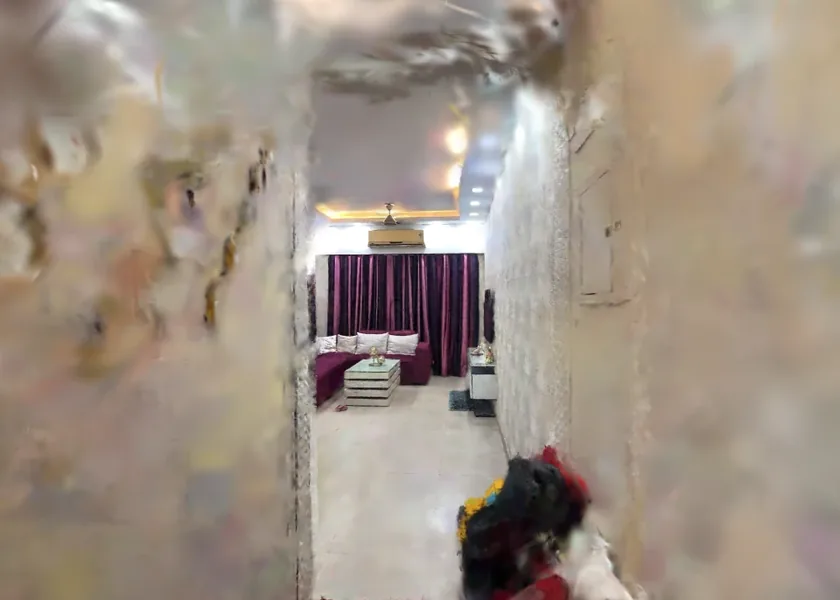

Namma Space
October–November 2026
A phone scan of my home, turned into a photorealistic 3D world you can walk through in the browser. Built for Namma Space at Techfest 2026-27, IIT Bombay.
- Captured on an iPhone and reconstructed on-device with 3D Gaussian Splatting: 463,573 Gaussians, no GPU workstation.
- Aligned and cleaned in the SuperSplat Editor, then compressed from 115 MB to a 7.85 MB web file.
- Walk through it with WASD and mouse. Collision voxels keep you on the floor and stop you at walls.
- Wrote the capture SOP and Python tools to inspect splats and draw a top-down floor map, the first step toward indoor navigation.